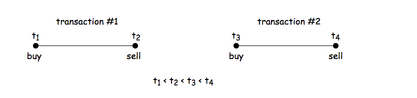
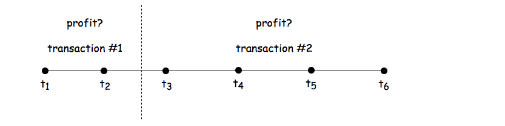
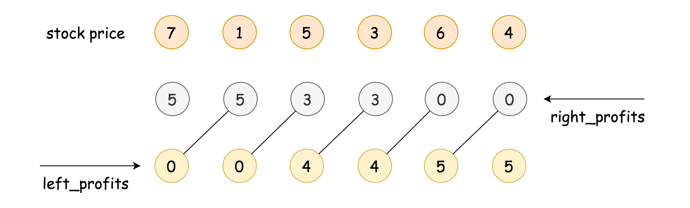
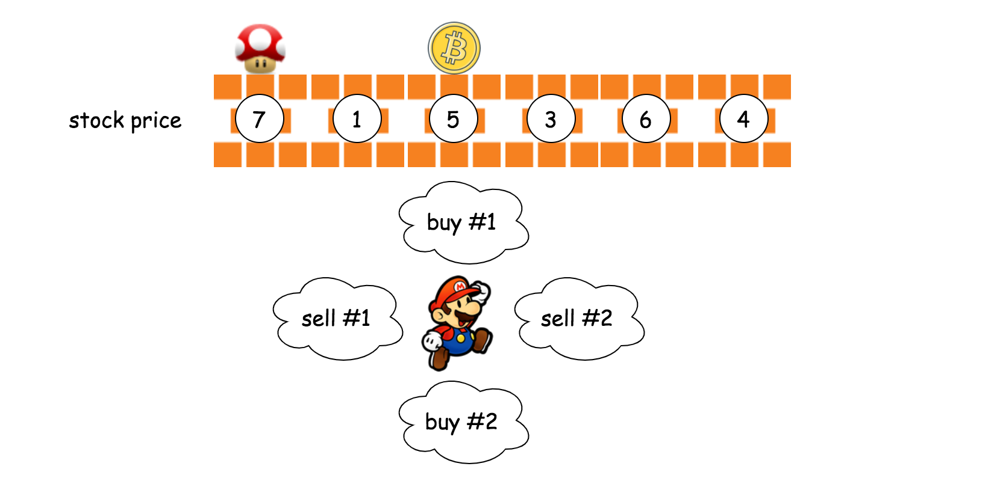

Solution
Overview
First of all, as one should know, this is one of the problems from the series of Best Time to Buy and Sell Stock problem. One could start from the first problem in the series and progress one by one from easy to hard.
If there is ever a God of the stock market, who knows the price of stock at any moment, then the strategies to gain the maximum profits from the stock market is actually surprisingly intuitive, which also depends on the number of transactions that one can make.
If one can only make one transaction (i.e. buy and sell once), then better to make this one bet count. The best strategy would be to buy at the lowest price and then sell at the highest price. To put it simple, buy low sell high.

Let us look at a concrete example as shown in the above graph, given a list of prices, the task becomes to find maximal difference between a latter stock price and an earlier one, which would be the maximal profits that we could gain, if only one transaction is allowed.
In the above example, the best moment to buy the stock would be the timestamp t1, and the best moment to sell the stock would be the timestamp t9.
The above strategy is actually the solution to the first problem of the series, i.e. Best Time to Buy and Sell Stock.
On the other hand, if one can make as many transactions as one would like, then in order to gain the maximal profits, one must capture each augmentation and avoid each plunging of stock price.
Specifically, given a list of prices, for any two adjacent time points with stock prices p1 and p2, the above best strategies can be broke down into the following two cases:
-
If later the price augments, i.e.
p2 > p1, then a good trader should buy atp1and then sell atp2, seizing this moment to make profits. -
If later the price stays the same or even plunges, i.e.
p2 <= p1, then a good trader should just hold the money in the pocket, neither to buy nor sell any stock.
With the above strategies, as one can see, we would perfectly capitalize at each right moment, meanwhile avoiding any loss. At the end, the accumulative profits that we gain over the time would reach the maximum.
With the same example above, we would buy at the moment of t1 and sell it at the moment of t2. Similarly, we would also buy at the moment of t2 and sell the moment of t3. As one might notice, the profits we gain from these two transactions are equivalent to the single transaction of buying at the moment of t1 and selling at the moment of t3.
The above strategy would be the solution for the second problem of series, i.e. Best Time to Buy and Sell Stock II where there is no limit on the number of transactions.
Approach 1: Bidirectional Dynamic Programming
Intuition
The only difference between this problem and the previous two problems is that in this problem we are allowed to make at most two transactions.
Additionally, there is a constraint on the order of transactions stated in the problem description as follows:
You may not engage in multiple transactions at the same time, (i.e. you must sell the stock before you buy again).
We could interpret this constraint as that there would be no overlapping in the sequence of transactions.

In other words, the two transactions that we should make would situate in two different subsequences of the stock prices, without any overlapping, which we illustrate in the above graph.
That being said, we can solve the problem in a divide-and-conquer manner, where we divide the original sequence of prices into two subsequences and then we calculate the maximum profit that we could gain from making a single transaction in each subsequence.
The total profits would be the sum of profits from each subsequence. If we enumerate all possible divisions (or we could consider them as combinations of subsequences), we could find the maximum total profits among them, which is also the desired result of the problem.

So we divide this problem into two subproblems, and each subproblem is actually of the same problem of Best Time to Buy and Sell Stock as we discussed in the overview section.
Algorithm
A naive implementation of the above idea would be to divide the sequences into two and then enumerate each of the subsequences, though this is definitely not the most optimized solution.
For a sequence of length , we would have possible divisions (including no division), each of the elements would be visited once in each division. As a result, the overall time complexity of this naive implementation would be .
We could do better than the naive implementation. Regarding the algorithms of divide-and-conquer, one common technique that we can apply in order to optimize the time complexity is called dynamic programming (DP) where we trade less repetitive calculation with some extra space.
In dynamic programming algorithms, normally we create an array of one or two dimensions to keep the intermediate optimal results. In this problem though, we would use two arrays, with one array keeping the results of sequence from left to right and the other array keeping the results of sequence from right to left. For the sake of name, we could call it bidirectional dynamic programming.

First, we denote a sequence of prices as Prices[i], with index starting from 0 to N-1. Then we define two arrays, namely left_profits[i] and right_profits[i].
-
As suggested by the name, each element in the
left_profits[i]array would hold the maximum profits that one can gain from doing one single transaction on the left subsequence of prices from the index zero toi, (i.e.Prices[0], Prices[1], ... Prices[i]). For instance, for the subsequences of[7, 1, 5], the correspondingleft_profits[2]would be 4, which is to buy the price of 1 and sell it at the price of 5. -
And each element in the
right_profits[i]array would hold the maximum profits that one can gain from doing one single transaction on the right subsequence of the prices from the indexiup toN-1, (i.e.Prices[i], Prices[i+1], ... Prices[N-1]). For example, for the right subsequence of[3, 6, 4], the correspondingright_profits[3]would be 3, which is to buy at the price of 3 and then sell it at the price of 6.
Now, if we divide the sequence of prices around the element at the index i, into two subsequences, with left subsequences as Prices[0], Prices[1], ... Prices[i] and the right subsequence as Prices[i+1], ... Prices[N-1],
then the total maximum profits that we obtain from this division (denoted as max_profits[i]) can be expressed as follows:
Then if we exhaust all possible divisions, i.e. we place the two transactions in all possible combinations of subsequences, we would then obtain the global maximum profits that we could gain from this sequence of stock prices, which can be expressed as follows:
We demonstrate how the DP arrays are calculated in the following animation.
Following the above idea, Here are some sample implementations.
In the above implementations, we refined the code a bit to make it a bit more concise and hopefully more intuitive. Here are some tweaks that we applied.
-
Rather than constructing the two DP arrays in two separate loops, we do the calculation in a single loop (two birds with one stone).
-
We pad the
right_profits[i]array with an additional zero, which indicates the maximum profits that we can gain from an empty right subsequence, so that we can compare the result of having only one transaction (i.e.left_profits[N-1]) with the profits gained from doing two transactions.
By the way, one can try the above algorithm on another problem called Sliding Window Maximum.
Complexity
-
Time Complexity: where is the length of the input sequence, since we have two iterations of length .
-
Space Complexity: for the two arrays that we keep in the algorithm.
Approach 2: One-pass Simulation
Intuition
Just when we think that the space complexity of is the best we can get for this problem, many users in the Discussion forum proposed a more optimized solution that reduced the space complexity to , (just to name a few of them @weijiac, @shetty4l). The idea is quite brilliant, and requires only a single iteration without the additional DP arrays.
The intuition is that we can consider the problem as a game, and we as agent could make at most two transactions in order to gain the maximum points (profits) from the game.
The two transactions be decomposed into 4 actions: "buy of transaction #1", "sell of transaction #1", "buy of transaction #2" and "sell of transaction #2".
To solve the game, we simply run a simulation along the sequence of prices, at each time step, we calculate the potential outcomes for each of our actions. At the end of the simulation, the outcome of the final action "sell of transaction #2" would be the desired output of the problem.

Algorithm
Overall, we run an iteration over the sequence of prices.
Over the iteration, we calculate 4 variables which correspond to the costs or the profits of each action respectively, as follows:
-
t1_cost: the minimal cost of buying the stock in transaction #1. The minimal cost to acquire a stock would be the minimal price value that we have seen so far at each step. -
t1_profit: the maximal profit of selling the stock in transaction #1. Actually, at the end of the iteration, this value would be the answer for the first problem in the series, i.e. Best Time to Buy and Sell Stock. -
t2_cost: the minimal cost of buying the stock in transaction #2, while taking into account the profit gained from the previous transaction #1. One can consider this as the cost of reinvestment. Similar witht1_cost, we try to find the lowest price so far, which in addition would be partially compensated by the profits gained from the first transaction. -
t2_profit: the maximal profit of selling the stock in transaction #2. With the help oft2_costas we prepared so far, we would find out the maximal profits with at most two transactions at each step.
Complexity
-
Time Complexity: , where is the length of the input sequence.
-
Space Complexity: , only constant memory is required, which is invariant from the input sequence.
Last Edit: January 6, 2021 8:13 AM
I tweaked the "One-pass Simulation" approach slightly to make it (in my opinion) much more intuitive, without affecting performance at all.
You want to make the most money that you can by completing two transactions. You can do this with one pass through the array. You have to keep track of three pieces of information:
-
If I completed the best transaction until this point, how much money would I make (i.e. the first problem in the series).
-
At which point can I acquire a second stock and keep the most money in my pocket. The money that I have will be firstProfit-secondPrice. (Note that this value could be negative, if the second stock costs more than you made from the first one. This is not a problem, as you will make that money back when you sell the second stock)
You can solve the problem in one iteration through the array. The way to accomplish this is to ask: If I do the best transaction until now and buy the second stock at the current price, will I end up with more money in my pocket than I would have in a previous stage of the iteration.
mostMoneyInPocket = max(mostMoneyInPocket, firstTransactionProfit - currentPrice) -
What is the highest price that I can sell that second stock for? Since I already bought it all I have to do is find the highest price to sell it for.
As you iterate, ask: if I sold it at the current price, would it make more money than selling it earlier?
profitFromTwoTransactions = max(secondProfit, mostMoneyInPocket + currentPrice)
class Solution:
def maxProfit(self, prices: List[int]) -> int:
firstTransactionCost = prices[0]
firstTransactionProfit = 0
mostMoneyInPocket = -prices[0]
profitFromTwoTransactions = 0
for currentPrice in prices:
firstTransactionCost = min(firstTransactionCost, currentPrice)
firstTransactionProfit = max(firstTransactionProfit, currentPrice-firstTransactionCost)
mostMoneyInPocket = max(mostMoneyInPocket, firstTransactionProfit-currentPrice)
profitFromTwoTransactions = max(profitFromTwoTransactions, mostMoneyInPocket+currentPrice)
return profitFromTwoTransactions

Last Edit: June 9, 2020 3:36 PM
The comment in approach #3 is kind of vague:
" reinvest the gained profit in the second transaction "
We are not doing any reinvestment here, just accumulating the profit for book keeping.
May 8, 2020 6:01 PM
This needs to be explained more thoroughly:
t2_cost: the minimal cost of buying the stock in transaction #2, while taking into account the profit gained from the >previous transaction #1. One can consider this as the cost of reinvestment. Similar with t1_cost, we try to find the lowest >price so far, which in addition would be partially compensated by the profits gained from the first transaction.

Last Edit: December 1, 2020 9:24 PM
We can also use state machine similar to Approach 1: https://leetcode.com/problems/best-time-to-buy-and-sell-stock-with-cooldown/solution/
We can define 5 states and finally return max(empty, one sold, two sold). # No transaction, just one transaction or two transactions.
empty -> one bought -> one sold -> two bought -> two sold
class Solution:
def maxProfit(self, prices: List[int]) -> int:
empty = 0
oneBought = oneSold = twoBought = twoSold = -float('inf')
for price in prices:
prevOneBought, prevOneSold, prevTwoBought = oneBought, oneSold, twoBought
oneBought = max(empty - price, prevOneBought)
oneSold = max(prevOneBought + price, prevOneSold)
twoBought = max(prevOneSold - price, prevTwoBought)
twoSold = max(prevTwoBought + price, twoSold)
return max(empty, oneSold, twoSold)

July 1, 2020 10:21 PM
Can any one tell me why in this t2_cost = min(t2_cost, price - t1_profit), we use updated t1_profit?
It seems to me that we need to use unupdated t1_profit? Thanks
May 5, 2020 6:40 AM
Doesn't checking for max_profits[i]=left_profits[i]+right_profits[i] work too?
April 5, 2020 7:32 AM
Brute Force solution:
class Solution {
public:
//brute force O(n*n)
int maxProfit(vector<int>& prices) {
int ans =0;
int n = prices.size();
for(int i=0; i< n ; i++){
int profit = solve(0, i, prices) + solve(i+1, n-1, prices);
ans = std::max(ans, profit);
}
return ans;
}
int solve(int start, int end, vector<int> &prices){
int max_profit = 0;
if(start >= end)
return 0;
int min_price = INT_MAX;
for(int i=start; i<=end; i++){
if(prices[i] < min_price){
min_price = prices[i];
}else if (prices[i] - min_price > max_profit) {
max_profit = prices[i]- min_price;
}
}
return max_profit;
}
};

March 9, 2021 6:01 AM
The one-pass solution is actually the one (initially) proposed by the authors of the Elements of Programming Interviews as a solution to the generalized k-transaction problem (Problem 22.3 in the EPI book). It's a brilliant solution, not sure how one would be able to come with it without having seen it before.
May 14, 2021 1:22 PM

March 9, 2021 11:08 AM
The tricky part for me in understanding approach 3 is that it allows selling then buying stock again on the same day. It also returns the max of the profit from the 2nd transaction. It's possible that the max would come from a single transaction.
T2 is more like could you do better if you had a 2nd transaction and reinvested what you made from the first transaction
prices = [1,3,0,4]
price = 1
t1_cost = 1
t1_profit = 0
t2_cost = 1
t2_profit = 0
price = 3
t1_cost = 1
t1_profit = 2
t2_cost = 1
t2_profit = 2
price = 0
t1_cost = 0
t1_profit = 2
t2_cost = -2. // take what you made in the first transaction and invest it into the 2nd
t2_profit = 2
price = 3
t1_cost = 0
t1_profit = 4
t2_cost = -2
t2_profit = 6. // 4 - (-2)